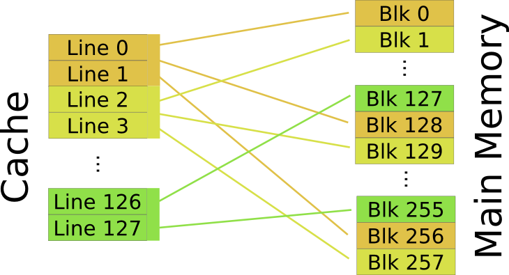

Research School of Engineering
ENGN8537: Embedded Systems and Real Time Digital Signal Processing
The air is clean. The water is clean. Even the dirt is clean! Bowling averages are way up. Minigolf scores are way down. And we have more excellent
Memory and
Cache
than any other planet we communicate with. I'm telling you, this place is great!
Ah, but don't worry: it'll all make sense. I'm a professional.
Cache
L1 Cache
L2 Cache
L3…
RAM
Flash
Hard Drive
Network/Cloud
Cache is a verb and noun: You cache data in a cache.
To cache means to store away or hide.
Cache in a processor stores copies of data from RAM for fast future use.
Recall the memory hierarchy presented in the last lecture. Each level may be used to cache the level above it. To cache means to store for future use. Confusingly, RAM data is cached in a cache called Cache!
Hard drive contents can also be cached, this time in normal RAM. This is why if you have lots of programs open your computer it suddenly slows down: You’ve run out of real RAM and you’re now using ‘fake RAM’ on the hard drive which is much slower.
This is also called ‘swap’.
Cache is amazingly small, just a few kB to a few MB.
The fastest type of memory is the Cache memory inside the processor itself. We will discuss memories lower in the hierarchy later in the course, but today we concern ourselves only with Cache.
It is almost unimaginably small by today’s standards: A few kB in L1 through to 8-24MB in L2/3
i7 Quad
L1: 32kB x 2
L2: 256kB
L3: 8MB
Xeon Octo
L1: 32kB x 2
L2: 256kB
L3: 24MB
Locality of Reference
Most time spent accessing a small subset of total memory.
Future access are likely to be near past accesses.
Cache works on a principle called locality of reference. Analysis of computer programs shows that most of their time is spent accessing a small subset of their overall memory. This might be due to, for example, loops, small handlers for common events, a core set of functions that call each other etc. The actual mechanism that causes locality of reference isn’t important, however the effects are.
Note
We will focus on Instruction Cache. Data Cache exists and works on similar principles
Temporal Locality
Instruction that has just been executed is likely to be required again soon.
Spacial Locality
Instructions close to that executing are likely to be required soon.
Instructions typically live in main memory, which can take several clock cycles to access. Pipelined processors require that their instructions arrive in a single clock cycle, and Superscalar processors may look to fetch several instructions per cycle.
The only way to keep modern processors fed with instructions is to have a tightly coupled, small and fast set of memory in which the instructions most likely to be executed next are found. Such memory is called the Instruction Cache. There is also a data cache that works on a similar principle, however we will focus on the Instruction Cache in examples.
Principle of Caching
When an instruction is fetched from memory, also fetch several of the ones near it.
Spatial
Keep these instructions near the CPU for as long as possible (until that cache space is required for something new).
Temporal
Terminology
Cache Line: A space in the cache to which a block of instructions may be loaded.
Line Size: The number of instructions fetched a time. Usually around 64 bytes (16 instructions on a 32-bit machine).
Cache Hit: When the processor needs a new instruction and finds it in the cache
Cache Miss: When the processor must fetch the new instruction and neighbours from main memory, repopulating a cache line.
Eviction: The data currently in a cache line is removed to make space for new data.
Direct Cache

The cache is, of course, smaller than main memory so some algorithm has to be used to map a main memory location to a cache line. The simplest algorithm is called Direct Mapping. In this scheme, each memory block is stored in a cache line of the same address modulo the cache size. For example, a cache of 128 blocks will store memory block 134 in cache line number 6. DM Caches are simple but there may be contention even when the cache isn’t full.
Associative Cache

An Associative Mapping is the most flexible cache arrangement in which any memory location can be stored in any cache location. If the cache isn’t full, each new memory block can just take an empty slot. If the cache is full, the cache line to evict is chosen typically using a Least Recently Used algorithm. Complexity comes from finding where in the cache a particular memory block has been put when it is next needed.
Set Associative Cache

Almost all modern caches are Set Associative. These combine the best features of each of the previous methods, as each memory location “short lists” a set of cache lines based upon its address modulo the number of sets, then the entry to evict from the set is chosen by an LRU algorithm as with an Associative cache.
Cache must store more than data: It must store where that data came from and how old it is.
This metadata is generally called the tag data. It is not cache content as such, it's the extra information that allows the cache to operate correctly.
Note that the age data is only required for Associative and Set Associative type caches that require an LRU algorithm.
Cached Writing
Cache strategies discussed previously assume a read access, but what happens for a write?
Writethrough
New value is written to both the cache and the main memory locations at once.
- Writes only the changed value
- Writes every time that value is changed
If the memory is in Cache, what should a write do: Write-back or Writethrough? In a write-through cache, a write to a memory location in Cache will write the new value to the cache line and the memory location.
Writeback
New value is written only to the cache. Main memory is updated when the cache line is evicted.
- Writes all values in the line, even if only one has changed
- Writes only once, even if a value has changed several times
Write-back writes the new value to cache and marks it dirty; it is then written to main memory only when the line is evicted.
Write-through generates unnecessary writes if the memory location is written several times in sequence. Write-back generates unnecessary writes if only one location in the cache is changed, as the whole line must be written back.
DMA
Direct Memory Access (DMA) is a technique used when large amounts of data need to be moved between peripherals and memory without any intermediate processing. Instead of requiring a processor load/store cycle, the data may be moved around without processor intervention.
Cache Coherency
DMA bypasses the processor and therefore the cache.
If the processor and DMA controller are using the same memory location, they may see different values
With some exceptions, memory used for DMA must be uncached.
What’s the interaction between DMA and caches?
Because the memory has multiple masters (writers), information kept in cache can’t easily be the source or destination of a DMA transfer. Typically memory reserved for DMA transfers will be marked as uncached and will be much slower to access from the CPU.
Cache Coherency is a problem when ever there are multiple memory masters, such as if you have a multi-core CPU.
Any data that is accessed by more than one CPU can’t feel the full benefit of being cached.